หน้าหลัก
สินค้า
รถยนต์ทั่วไป
รถยนต์อเนกประสงค์ (SUV)
รถยนต์กระบะเล็ก/รถแวน (LIGHT TRUCK/VAN)
รถยนต์กระบะใหญ่และรถบรรทุก (TRUCK&BUS)
ดูแลรักษา
เกี่ยวกับเรา
ทำไมต้องเลือก?
เกี่ยวกับ จีที เรเดียล
ติดต่อเรา
การสึกหรอของยาง
หน้าหลัก
>>
การดูแลรักษายาง
>> การสึกหรอของยาง
Quick Links:
การสึกหรอบริเวณส่วนกลาง
การสึกหรอบริเวณไหล่ยาง เพียง1ข้าง
การสึกหรอบริเวณไหล่ยางทั้งสองข้าง
การสึกหรอแบบผิดปกติ
ยางเกิดการแตก ปริเป็นเกล็ด
สาเหตุของการสึกหรอเร็ว
สาเหตุของการร่อนออกของดอกยาง
สิ่งที่ควรทำเมื่อสังเกตุเห็นเส้นใยเหล็ก โผล่ออกมาจากเนื้อยาง
การบวมที่ขอบยาง
การชำรุดที่ขอบยาง
การเสื่อมสภาพของขอบยาง
การสึกหรอเป็นช่วงๆ
รูปแบบของลายดอกยาง มีอยู่ 3แบบด้วยกัน
ยางที่สึกหรอจนมีผิวที่เรียบ
การสึกหรอบริเวณส่วนกลาง
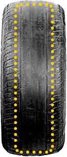
สาเหตุ:
ยางมีแรงดันลมยางที่มากเกินไป, หน้ากว้างของล้อแคบ(ยางกับล้อ มีขนาดไม่พอดีกัน), รถที่มีระบบขับเคลื่อนล้อหลังน้ำหนักที่กดลงไปบนยางชุดหลังจะมากขึ้น
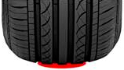
ผลกระทบต่อยาง:
เกิดการสึกหรอที่ช่วงกลางของยางมากกว่าบริเวณอื่นและทำให้มีอายุการใช้งานที่สั้นลงตัวยางจะมีสภาพที่แข็งกระด้างขึ้นและทนต่อแรงเสียดทานได้ต่ำมีโอกาสที่ยางจะระเบิดได้ง่าย ถ้ามีการกระทบจากสิ่งภายนอก
ทางแก้:
ลดแรงดันลมยางลงจนถึงค่าที่ถูกกำหนดไว้จากโรงงานผู้ผลิตซึ่งการเช็คแรงดันลมยางควรทำในช่วงที่ยางเย็นตัวหรือจอดรถทิ้งไว้อย่างน้อย 3ชั่วโมง
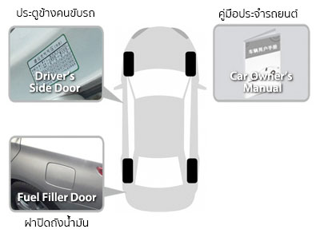
การสึกหรอบริเวณไหล่ยาง เพียง1ข้าง
สาเหตุ:
ยางมีองศาที่ผิดปกติ
ทางแก้:
เข้าตรวจเช็คระบบช่วงล่าง และเข้ารับการตั้งศูนย์ถ่วงล้อ
การสึกหรอบริเวณไหล่ยางทั้งสองข้าง
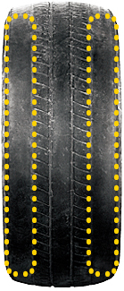
สาเหตุ:
ความดันลมยางต่ำ และมีการบรรทุกน้ำหนักที่เยอะเกินไปเบรคอย่างกระทันหัน และเลี้ยวรถด้วยความเร็วสูงอยู่ บ่อยครั้งหน้ากว้างของล้อกว้างเกินไป (ยางกับล้อ มีขนาดไม่พอดีกัน)
ทางแก้:
เพิ่มแรงดันลมยางให้มากขึ้นจนถึงค่าที่ถูกกำหนดไว้จากโรงงานผู้ผลิตตรวจสอบให้ยางกับล้อมีขนาดที่พอดีกันหลีกเลี่ยงการเบรกและออกตัวอย่างกะทันหันการเช็คความดันลมยางควรทำในช่วงที่ยางเย็นตัวหรือจอดรถทิ้งไว้อย่างน้อย 3ชั่วโมง
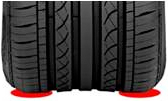
ผลกระทบต่อยาง:
เกิดการสึกหรอที่ไหล่ยางทั้งด้านในและด้านนอกซึ่งส่งผลให้อายุการใช้งานสั้นลงอุณหภูมิของตัวยางจะสูงขึ้นความทนทานจะลดลงซึ่งอาจก่อให้เกิดอุบัติเหตุได้แรงต้านจากการหมุนของล้อจะเพิ่มขึ้นส่งผลให้สิ้นเปลืองเชื้อเพลิงมากขึ้น
การสึกหรอแบบผิดปกติ
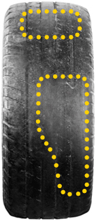
การสึกหรอแบบผิดปกติ
สาเหตุ:
การทำงานที่บกพร่องของระบบเบรค ABSการเบรค หรือยางล็อคลูกปืนล้อ หรือส่วนประกอบอื่นๆไม่อยู่ในสภาพพร้อมใช้งาน มีการถ่วงสมดุลล้อที่ไม่เหมาะสมล้อเกิดการผิดรูป เสียทรง หรือเคลื่อนออกจากศูนย์กลาง มีการเปรอะเปื้อนของสารเคมีบนหน้ายาง
ผลกระทบต่อยาง:
อายุการใช้งานที่สั้นลง
ทางแก้:
ทำการตั้งศูนย์ และถ่วงล้อให้สมดุลตรวจสอบการทำงานของระบบช่วงล่าง และระบบควบคุมการบังคับเลี้ยว
ยางเกิดการแตก ปริเป็นเกล็ด
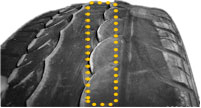
สาเหตุ:
ระบบช่วงล่างที่ทำงานบกพร่อง จะส่งผลให้เกิดการสึกหรอของยางที่ไม่เท่ากัน และเกิดรอยหยาบ
สาเหตุทั่วไป:
การใส่ยางที่ไม่ถูกวิธี
ทางแก้:
1. ทำการตั้งศูนย์ และถ่วงล้อให้สมดุล 2. ตรวจสอบการทำงานของระบบช่วงล่าง และระบบควบคุมการบังคับเลี้ยว
การสึกหรอที่เกิดจากตั้งล้อผิดองศา:
ล้อตั้งองศาเข้าหาตัวรถ จะส่งผลให้ใหล่ยางด้านนอกสึกหรอเร็ว และยางจะร่อนเป็นเกล็ดล้อตั้งองศาออกจากตัวรถ จะส่งผลให้ใหล่ยางด้านในสึกหรอเร็ว และยางจะร่อนเป็นเกล็ด
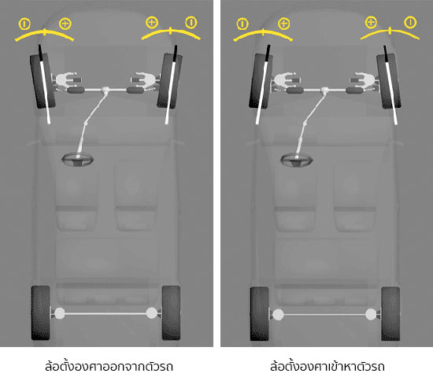
สาเหตุของการสึกหรอเร็ว
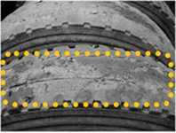
สาเหตุ:
พฤติกรรมในการขับขี่ขับผ่านบนพื้นผิวถนนที่ต่างกันบ่อยๆการบำรุงรักษารถและยางที่ไม่เหมาะสมตั้งศูนย์ถ่วงล้อไม่สมดุลระบบเบรคทำงานบกพร่อง
ผลกระทบต่อยาง:
มีอายุการใช้งานที่สั้นลง
ทางแก้:
ทำการตั้งศูนย์ และถ่วงล้อให้สมดุล
สาเหตุของการร่อนออกของดอกยาง
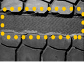
ใช้ยางที่มีแรงดันลมยางไม่เพียงพอ มาเป็นระยะเวลานานยางถูกตัด เจาะ จนชำรุดเสียหาย และซ่อมแซมไม่ดีพอ
ข้อแนะนำ:
ควรเปลี่ยนยางใหม่ทันที
สิ่งที่ควรทำเมื่อสังเกตุเห็นเส้นใยเหล็ก โผล่ออกมาจากเนื้อยาง
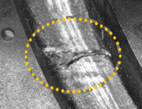
ข้อแนะนำ:
เปลี่ยนยางใหม่ทันที
การบวมที่แก้มยาง
สาเหตุ:
โครงสร้างภายในเกิดการเสียหาย ในขณะขับขี่ บริเวณใหล่ยางหรือขอบยาง อาจถูกกระทบอย่างแรงด้วยปัจจัยจากภายนอกเช่น รถตกหลุม บวกกับแรงดันลมยาง และชอบยางด้านในที่เสียหาย จะส่งผลให้ยางเกิดอาการบวมได้
วิธีป้องกัน:
1. เมื่อต้องการใส่ยาง ควรนำรถเข้าไปที่ศูนย์บริการยางที่มีประสิทธิภาพ 2. หลีกเลี่ยงการขับขี่บนพื้นถนนที่ขรุขระเป็นเวลานาน และควรลดความเร็วลง เพื่อลดแรงกระทบจากปัจจัยภายนอกต่างๆ 3. ไม่ควรกระทบกับเนินหลังเต่าแรงเกินไป 4. หมั่นตรวจเช็คและดูแลรักษายางให้บ่อยขึ้น
การชำรุดที่แก้มยาง
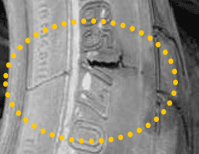
สาเหตุ:
ถูกทำให้เกิดรอยโดยสิ่งมีคมต่างๆ เช่น หิน เศษเหล็ก ฯ
วิธีป้องกัน:
1. หลีกเลี่ยงการวิ่งข้ามสิ่งกีดขวางต่างๆบนถนน 2. เข้าตรวจสอบ และทำการซ่อมแซมที่ศูนย์บริการโดยทันที
การเสื่อมสภาพของขอบยาง
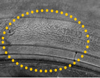
การถูกแสงแดดส่องโดยตรง อากาศที่ร้อนมากๆ ความร้อน และกระแสไฟฟ้า ปัจจัยเหล่านี้จะทำให้ยางเสื่อมสภาพ เช่นเดียวกันกับน้ำมัน เชื้อเพลิงต่างๆ การจอดรถไว้กลางแจ้งเป็นเวลานาน จะยิ่งส่งผลให้ยางเสื่อมสภาพเร็วมากขึ้น
การสึกหรอเป็นช่วงๆ
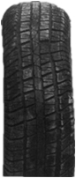
เมื่อมีปัจจัยภายนอกหรือการสึกหรอของระบบช่วงล่าง ที่ทำให้ยางชำรุดและเสียหายถึงชั้นเหล็กคาดหน้ายาง จะส่งผลทำให้ยางมีเสียรูปทรง และดอกยางจะมีการสึกแบบผิดปกติ
รูปแบบของลายดอกยาง มีอยู่ 3 แบบด้วยกัน
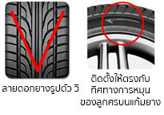
ลายดอกยาง แบบมีทิศทางเดียวกัน
มักจะมีลักษณะลายทางเป็นตัว V และจะมีทิศทางหมุนของยางแสดงไว้ที่ขอบยางการใส่ยาง ก็ควรใส่ให้ตรงกับทิศทางการหมุนที่ได้แสดงไว้ในกรณีที่ยางทั้ง 4เส้น เป็นไซส์เดียวกันการสลับยางควรจะสลับแบบแนวตั้ง (หน้า-หลัง)
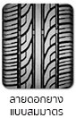
ลายดอกยาง แบบสมมาตร
มักจะมีลายโครงสร้างที่ต่อเนื่องไปในทางเดียวกัน ทั้งด้านในและด้านนอกมีลักษณะคล้ายคลื่นในกรณีที่ยางทั้ง 4เส้น เป็นไซส์เดียวกัน การสลับยางสามารถสลับได้ทุกแบบ
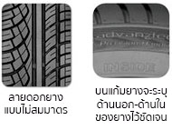
ลายดอกยาง แบบไม่สมมาตร
มีลายที่แตกต่างกันอย่างเห็นได้ชัด โดยลายฝั่งด้านนอกจะมีร่องยางที่ใหญ่กว่า เพื่อการระบายน้ำและการควบคุมที่ดีบนพื้นถนนที่เปียก ส่วนลายฝั่งด้านในจะมีร่องยางที่เล็กกว่า เพื่อเพื่มพื้นที่สัมผัสและการยึดเกาะบนถนนได้เป็นอย่างดี มีข้อความแจ้งระบุฝั่งนอกและในบนขอบยาง เพื่อการใส่ยางที่ถูกต้อง ในกรณีที่ยางทั้ง 4เส้นเป็นไซส์เดียวกัน การสลับยางสามารถสลับได้ทุกแบบ แต่ต้องคำนึงถึงฝั่งที่จะติดตั้ง ที่แสดงถึงลักษณะด้านนอก-ในของยางทุกครั้ง
ยางที่สึกหรอจนหน้ายางเรียบ
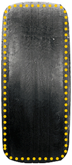
เป็นยางที่สึกหรอจนถึงขีดสุด หรือเท่ากับสะพานยางที่ความหนา 1.6มิลลิเมตร ในกรณีนี้ควรเข้าตรวจสอบอย่างละเอียด ที่ศูนย์บริการที่เชี่ยวชาญใกล้บ้านท่าน
Top